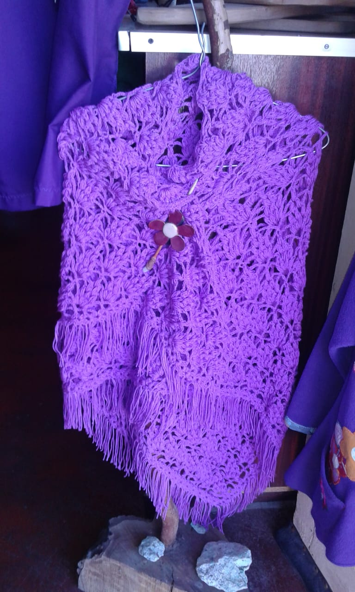
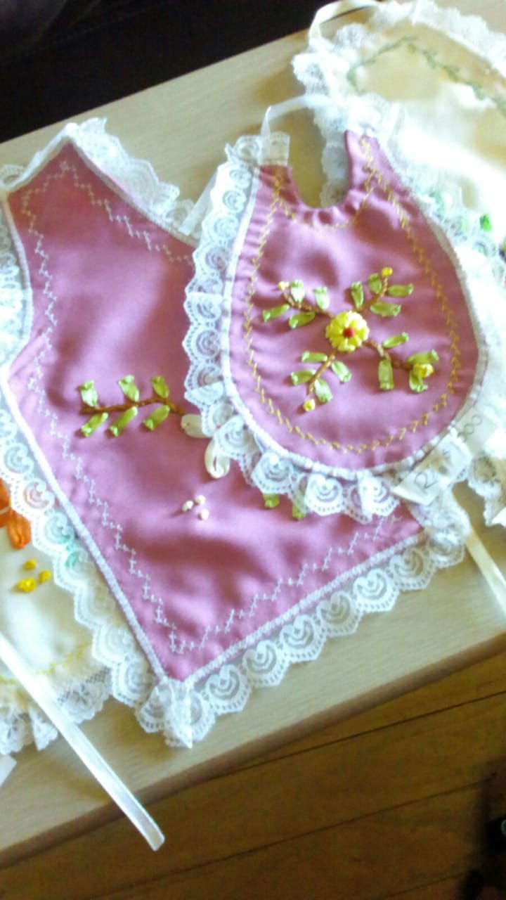
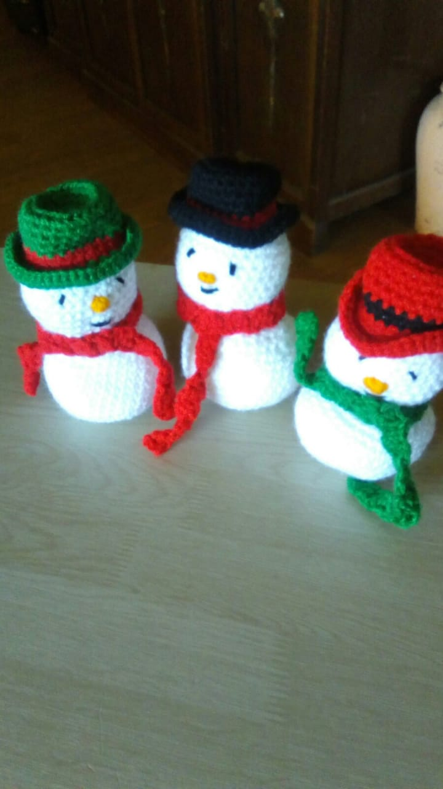

Tejidos a Palillo, Crochet y Telar

Se hacen gorros, bufandas, ponchos, capitas, zapatitos, ropa de niño y bebé, y en general todo lo que usted necesite para abrigarse en este invierno
Ver más

Bordados de caminos de mesa, esconeras, bolsas para el pan, bolsas para guardar, individuales y todo para adornar su hogar
Ver más

Novedosos muñecos tejidos a crochet, un bonito regalo para los niños, o cualquier persona en una ocasión especial
Ver más